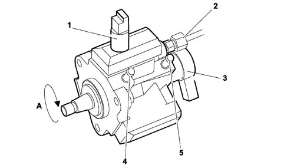
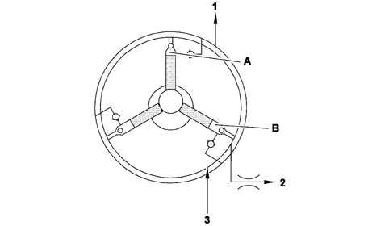
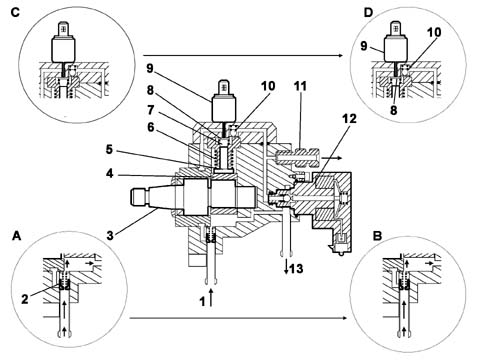
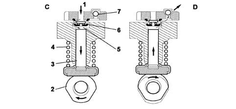
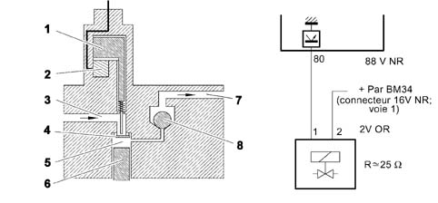
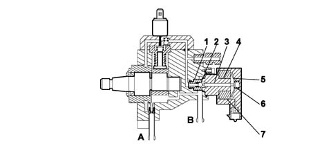
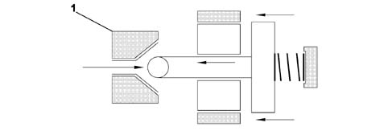
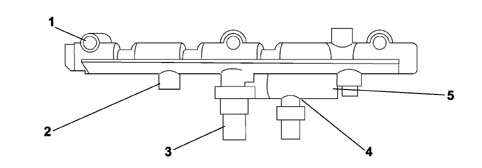

PRESSURE PUMP
- Path
- Descriptions > 10 ENGINE > 1060 DIESEL INJECTION SYSTEM > 1060E DIESEL PRESSURE PUMP AND CONTROL > PRESSURE PUMP
- Kind
- system description
- Applies to
- engines: 2.0 16V JTD; all production periods
- Interactive page
- https://sloeber94.github.io/elrnDB-fUlss/en/#/179006606
Applies to: engines: 2.0 16V JTD; all production periods
The high pressure pump is the volumetric, piston type operated by the timing belt with no timing obligations.
The pressure regulator and an electromagnetic device for deactivating one of the pumping elements are installed on the pump.
These devices are controlled by the NCM.
DESCRIPTION
The high fuel supply pressure for the common rail is produced by means of a radialjet type pump with three radial pistons.
The pump rotation speed is half that of the engine's.

A, Direction of rotation
1, 3rd piston exclusion device | 4, Diesel arrival |
2, High pressure outlet to the common rail | 5, Tank return |
3, Pressure regulator |
- Capacity: 0.7 cm³/rev;
- Maximum supply pressure to the common rail: 1350 bar at 3200 rpm;
- Maximum supply pressure from low pressure pump on the tank: 3.5 bar;
- Maximum return counter-pressure to the tank: 1 bar;
- Maximum inlet/return pressure difference: 0.8 min. -2.5 bar;
Diagram showing operation of high pressure pump

A, Compression stage
B, Inlet stage
1, High pressure outlet to common rail or pressure regulator | 3, Low supply pressure from the tank |
2, Tank return |
OPERATION
This a volumetric pump with three pistons, at 120° which have move alternately in a straight line controlled by a cam on the shaft.
Each pumping unit is equipped with an intake valve and a supply ball valve.
The pump is lubricated and cooled, through suitable ports, by the flow of fuel circulating inside.
The fuel, coming from the tank at a maximum pressure of 3.5 bar, is compressed by the pump, operated by the timing belt, and sent at high pressure (between 200 and 1350 bar) to the common rail.
The excess fuel, not used by the injectors, returns to the tank.
The regulation of the supply pressure to the common rail is achieved through a pressure regulator fitted on the pump and operated by the NCM.
Diagram showing high pressure pump

A, Intake stage < 0.7 bar
B, Intake stage > 0.7 bar
C, Intake stage (low pressure)
D, Supply stage (high pressure)
1, Fuel inlet (from the tank); | 8, Plate-type intake valve; |
2, Safety valve; | 9, 3rd pumping element exclusion device; |
3, Pump shaft; | 10, Supply valve; |
4, Cam; | 11, Common rail supply connector; |
5, Piston; | 12, Pressure regulator |
6, Return spring; | 13, Fuel return (to the tank); |
7, Compression chamber; |
The fuel, at low pressure, coming from the tank, is introduced into the pump from the inlet (1), via the safety valve (2) which regulates the supply for the high pressure pump as described:
- if the low pressure is weak, the flow of fuel passes through the valve (which has a jet) and is mainly used for lubricating and cooling (Phase A).
- when the pressure differential between the inlet and outlet is more than 0.7 bar, the valve piston slides and frees the supply port for the compression chambers (7) which fill up (Phase B).
The flow reserved for lubrication is maintained during these stages.
Fuel system
The retraction of the piston at bottom dead centre (BDI) through the action of the return spring creates a vacuum in the cylinder causing the rapid closure of the supply valve (2) and the opening of the plate-type intake valve (8) (Phase C), allowing the filling of the fuel compression chamber.
Supply
When it passes BDC as a result of the cam (4), the piston (5) compresses the fuel.
The increase in pressure in the cylidner thereby causes the closure of the intake valve (Phase D).
The supply of diesel at high pressure only takes place, via the supply valve (10), when the pressure of the cylinder is higher than the pressure in the common rail.
The piston compresses the fuel until top dead centre (TDC).
When this stage is passed, the supply valve closes, the piston retracts, thrust by the spring and therefore the cycle is repeated.
Compression cycle stages

C, Inlet stage;
D, Supply stage;
1, Fuel inlet (from the tank); | 5, Compression chamber; |
2, Cam; | 6, Plate-type intake valve; |
3, Piston; | 7, Supply valve; |
4, Return spring; |
EXCLUSION OF THIRD PUMPING ELEMENT
Diagram showing the operation of the device

1, Rod | 5, Cylinder |
2, Electromagnet | 6, Piston |
3, Fuel inlet | 7, Fuel supply |
4, Inlet valve | 8, Supply valve |
In order to reduce the pump drive power (power absorbed), as soon as a large capacity is no longer required (a speed of around 1500 rpm corresponding to about a third of the flow rate injected in full load conditions), the pump uses an electromagnetic device to deactivate one of the pumping elements. This device, operated by the NCM, is fitted on top of one of the cylinders and works by using a rod to keep the inlet valve open: in this way there can be no increase in the fuel pressure.
The high pressure pump no longer sends fuel continuously, but with pauses in the supply which produce considerably high pressure impulses in the common rail. These impulses prevent the exact calculation of the flow rate injected.
PRESSURE REGULATOR
DESCRIPTION
The pressure regulator is fitted on the high pressure pump and is operated by the NCM with the aim of keeping the high pressure of the fuel in the common rail constant.

A, Supply connector
B, Fuel return to the tank
1, Valve | 5, Keeper |
2, Ball plunger | 6, Pre-loading spring |
3, Pin | 7, Coil |
4, Casing |
OPERATION
The pressure regulator is fitted in parallel to this outlet.
When the coil (7) is not supplied, the supply pressure depends on the spring (6) pre-loading and is exerted, by a pin (3), on the ball plunger (2) for the valve (1); (adjustment shims make it possible to regulate the pre-loading to the desired value).
When the fuel exceeds this pre-loading value, the valve opens creating an escape route to the outlet (B). When the pressure of the fuel becomes too low in relation to the pre-loading, the valve closes until the planned limit.
Operation

FK, Force of the spring (constant) | 1, Valve |
FM, Magnetic attraction force (can be modulated) | |
FC, Force generated by the fuel pressure |
The forces are balanced when: FC = FK + FM.
Since the valve (1) only opens when the fuel exerts a force (FC) on the valve that is greater than the force for the spring (FK), if you wish to increase the pressure value for the fuel, you need to increase the pressure exerted on the valve proportionally, modulating the magnetic attraction force (FM).
COMMON RAIL
Description
This is a common supply manifold made from tempered steel which, in addition to distributing the fuel at high pressure evenly to all the injectors, is also designed to act as an accumulator carrying out the role of damping the impulses due to the three pumping cycles and the injector openings because the internal volume is sufficiently large, compared with the quantity of diesel injected for each working cycle of the engine to prevent fluctuations in pressure.
The fuel pressure sensor is fitted in the centre of the delivery manifold.
Characteristic of working principle 1060G PRESSURE PUMP ELECTRIC CONTROL
The hydraulic connections (high pressure) between the pump - manifold and manifold - injectors are via steel pipes with an internal diameter of 2.4 mm and an external diameter of 6 mm.
View of common rail

1, Outlet for the injectors | 4, Fuel temperature sensor |
2, High pressure fuel inlet connector | 5, Fuel return manifold to the tank |
3, Fuel pressure sensor |